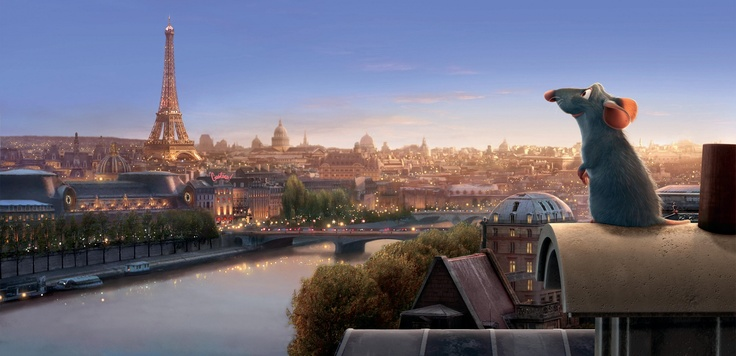
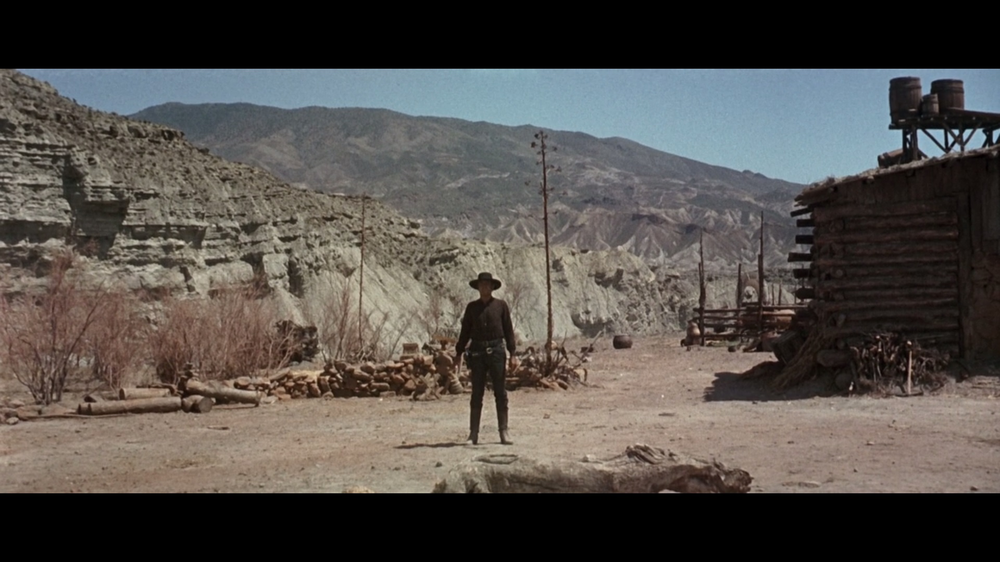
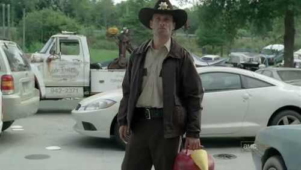
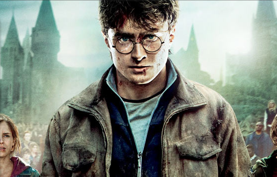
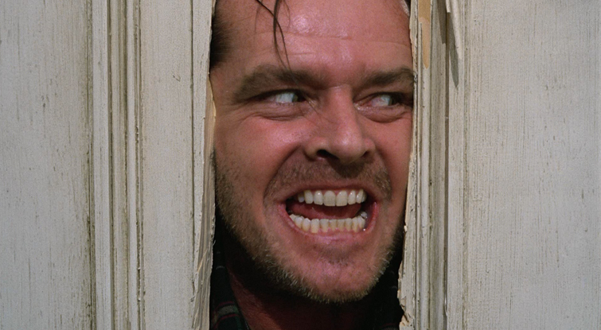
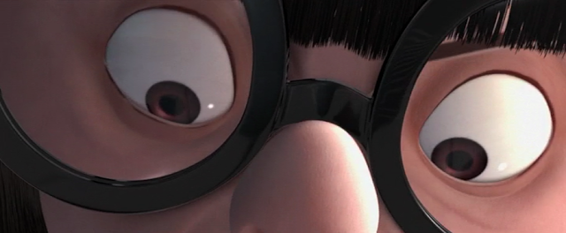

A camera shot is the amount of space that is seen in one shot or frame. Camera shots are used to demonstrate different aspects of a film's setting, characters and themes.
Extreme Long Shot

Is from a distance of 50 yards to several miles. Also known as the Establishing Shot because it establishes location for viewers.
Long Shot

A value of framing where the whole subject is relatively small enough to fit the height of the frame.
Medium Long Shot

Is from 5-10 feet and it clearly identifies the characters from knees up
Medium Shot
A value of framing in which the subject is a bit smaller than a medium close-up; a human figure from the waist up.
Medium Close Up

From the chest up- this fills the entire screen. Facial expression is clearly visible and important.
Close Up

Is a type of shot, which tightly frames a person or an object. Close-ups are one of the standard shots used regularly with medium shots and long shots.
Extreme Close Up Shot

Is used to highlight a particular part of the body or object such as a ring, a shoe, a speedometer, an eye.